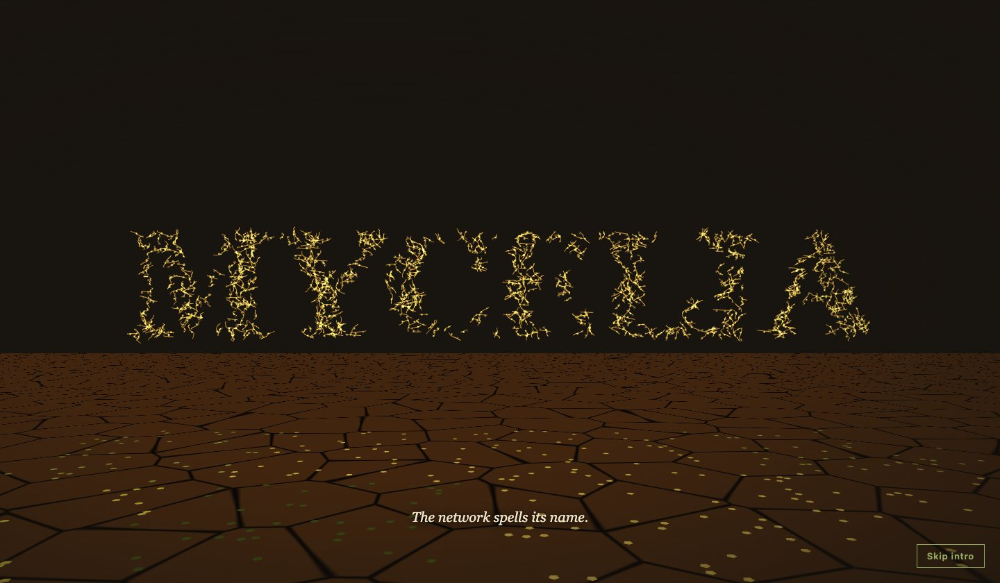
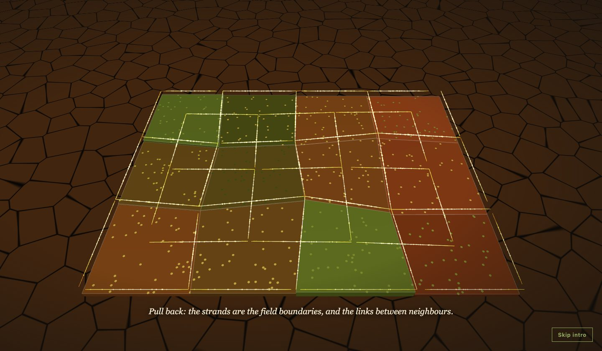
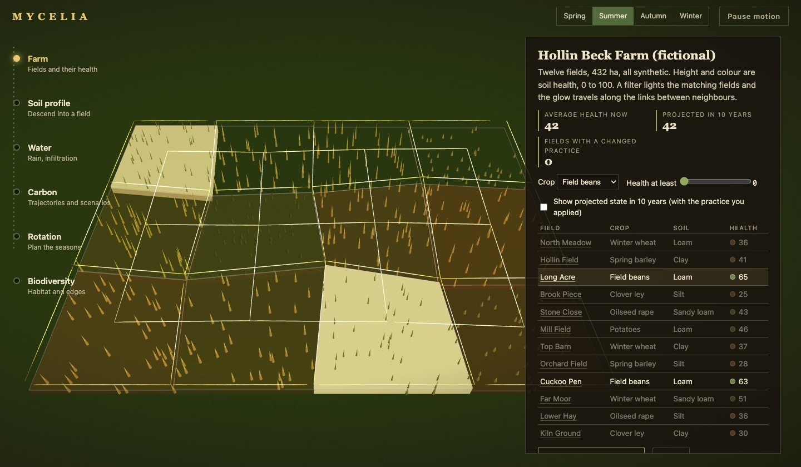
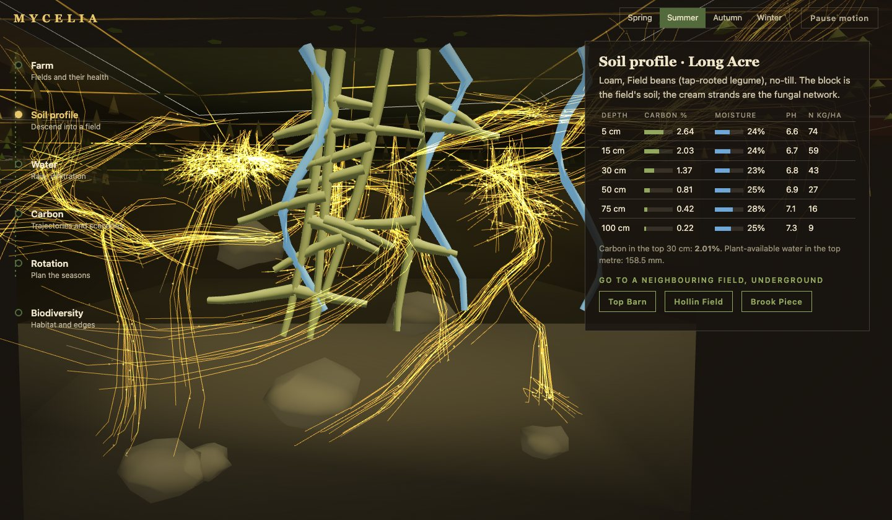
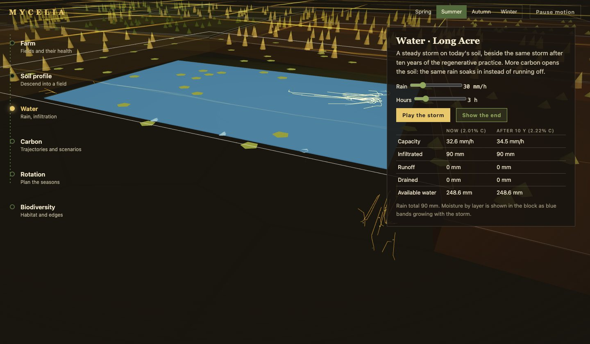
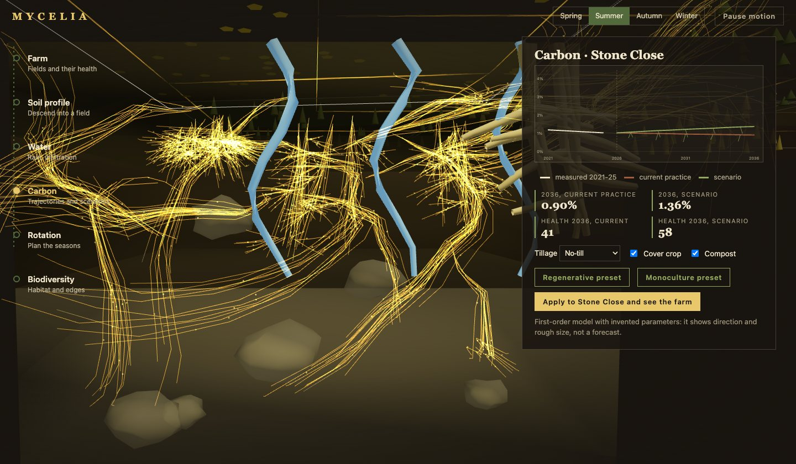
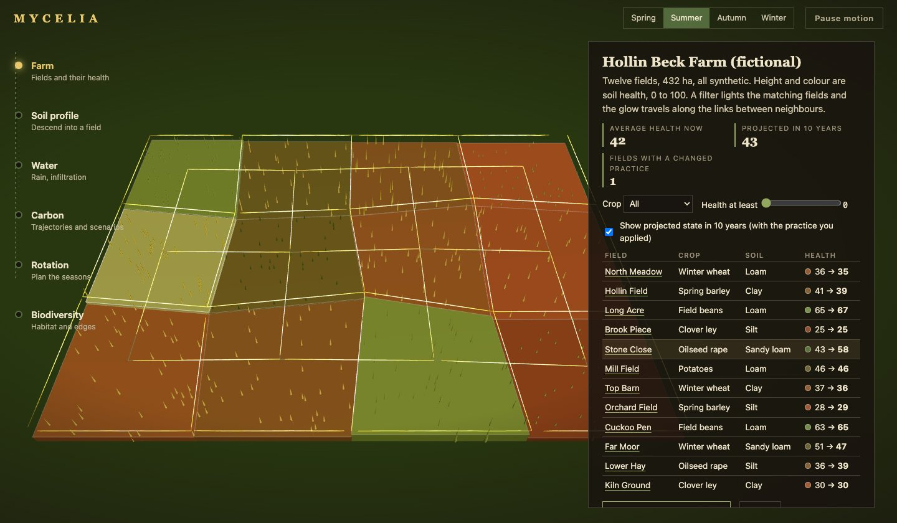

Blender · three.js · soil and water modelling · 2026-10
What Happens to a Farm's Water When Its Soil Carbon Rises?
A soil-intelligence demo built on a Blender cutaway: a raindrop falls into a crack and the camera follows it into a fungal network that spells its own name and becomes the farm map. On a fictional 12-field farm, a regenerative practice lifts average projected soil health from 42 to 54 and cuts the runoff in a 180 mm storm on Stone Close from 40.2 mm to 22.5 mm (invented parameters, direction not forecast).
Built from blueprint 03 of a written build book (Advanced Engineering Build Book, Volume VII) as one vertical slice. Everything is synthetic: the farm, the fields, the soil measurements and every parameter of the water, carbon, rotation and health models are invented to show direction and rough size, not agronomy. Not built: PostGIS/TimescaleDB (the demo reads JSON), MapLibre/deck.gl, real weather or sensor adapters, auth, touch testing, tablet and large-desktop checks, and a measurement on a physical GPU. The twelve agent roles are committed as Claude Code configuration, but this repository was produced by one session playing them in sequence, not by parallel subagents.
01 — The problem
Regenerative practices are sold on two promises: soil that holds more carbon and soil that takes in more water. Can a farm manager see how those two are connected for a particular field, and what a change of practice would do to the farm as a whole?
The build book adds a constraint that shapes the engineering: Blender should export guide curves and anchors, and the browser should generate the dense mycelium rather than bake millions of meshes. So the second question is what one small asset has to carry for a whole farm of fungal strands to be drawn, animated and reused as the map.
02 — What I built
One repository containing the pipeline, the models and the site.
- A scripted cutaway (
build.py): three soil layers, six rocks, three water channels and three crop root systems on a flat cut face, 5,026 triangles and 110 KB, plus aguides.jsonof 80 root curves, 16 mycelium curves and 3 water channels. - A strand system: 900 strands of 9 points generated from the guides, in three layouts (underground, the word MYCELIA, the farm map) that a vertex shader mixes. Nutrient particles ride the same morph from three float textures.
- Models in a shared package: a bucket model of infiltration, first-order soil carbon, rotation rules, a health index, a field-neighbour graph for activation, seasons.
- Six views: farm map, soil profile, water, carbon, rotation and biodiversity, each with its numbers in the DOM.
03 — How it was built
- 01
Guides, not meshes
The Blender script builds the roots and channels as swept tubes and writes the polylines it built them from to JSON.
validate.pyre-imports the GLB into an empty scene and checks the 19 contract nodes, the layer thicknesses, and that every guide has at least four points and stays inside the block. The browser then makes 900 strands that wander off the guides, so the density costs one draw call of lines. - 02
One object, three layouts
Every strand carries three position sets in one vertex layout: underground, the wordmark, and the farm map. The wordmark set is sampled from the lit pixels of a canvas-drawn word, and the map set lies along the field edges and the links between neighbours. Two uniforms mix them, so the intro's pull-back is the strands becoming the field boundaries, with no cut and no second object.
vec3 p = mix(mix(aA, aC, smoothstep(0.0,1.0,uM1)), aB, smoothstep(0.0,1.0,uM2)); - 03
Water that conserves itself
The infiltration model steps through hours of steady rain: the soil's conductivity (scaled by organic carbon) caps what enters, the layers fill from the top, anything above field capacity drains to the next layer, and the rest runs off. A test asserts that rain equals infiltrated plus runoff for several storms, and another that more carbon never increases runoff. On Stone Close, a 60 mm/h storm for 3 hours (180 mm) infiltrates 139.8 mm today and 157.5 mm after ten years of the regenerative practice.
- 04
Carbon as a stock
Soil carbon is a stock in tonnes per hectare with a yearly input from the rotation, cover crop and compost, and a decay rate that is higher under conventional tillage. On Stone Close the top-30 cm carbon is 1.02 percent today; ten years on the current practice it is 0.90 percent, on the regenerative scenario 1.36 percent. The chart draws its lines like roots, with twigs at every other year.
- 05
A rotation that explains itself
The planner has eight seasons. The same crop twice in a row, including the wrap from the last season to the first, or two brassicas together, is refused with the reason; a rotation with no legume is allowed but warned about. The regenerative template has three legume seasons and a positive nitrogen balance; the monoculture does not.
- 06
Activation along the graph
A filter lights the matching fields at once; the glow then reaches their neighbours one hop at a time through the field graph, and the links between fields brighten when both ends are lit. Field-to-field navigation sends a pulse along the shortest path underground before the view moves.
04 — Results
The intro's two best frames: the network after it has pulled out of the soil to spell the name, and the same strands after they have become the farm.


The product:





Whole farm. Average soil health now is 42; in ten years on today's practices it is still 42; with the regenerative preset on every field it is 54. Average top-30 cm carbon goes from 1.29 percent to 1.68 percent. These come from invented parameters and show direction, not a forecast.
Checks. 33 unit and API tests (99% statement coverage of the domain package), 22 Playwright tests that passed three runs in a row, a clean typecheck. They cover the demo script end to end, mass conservation, the rotation rules, the strand layouts, reduced motion, graphics failure, context loss, a phone width and six visual-regression states.
Performance, measured on an Apple M3 Pro with software WebGL, not a GPU. 29 draw calls and 4,946 triangles in the soil view, 570 KB of gzipped JavaScript, a 110 KB model and 24 KB of guides. Software rendering gave a 5.0 s largest contentful paint and a median 33 ms frame; there is no 60 fps claim here.
05 — What I'd do next
- Run the performance script on a physical GPU and a phone; draw the block and strands once instead of twice.
- Replace the bucket model with a published one and calibrate against a real field's moisture record, keeping the conservation tests.
- Add a CPU fallback for devices without float vertex textures, and a quality ladder driven by measured frame time.
- Move the fields to PostGIS polygons and the measurements to a time-series table, behind the existing API.